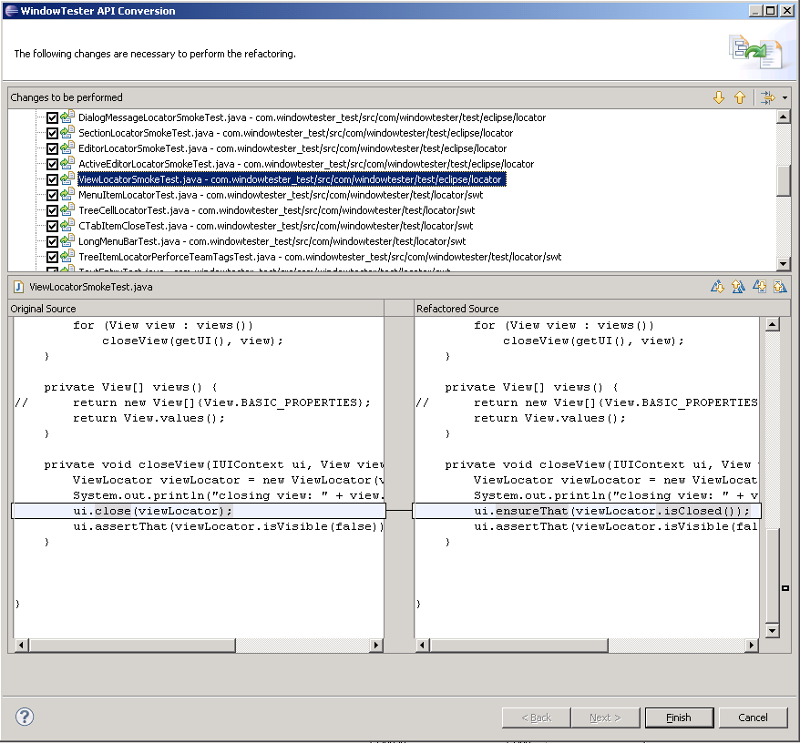

This document provides a high-level description of WindowTester Pro API deprecated or removed in WindowTester Pro v5.0.
WindowTester Pro v. 5.0 includes a number of API breaking changes. The rationale and preamble to these changes is described in this separate document. The following sections describe the specific changes made and the tooling we have provide to help make this transition painless to end-users.
WindowTester Pro contributes API migration tools to the IDE. To convert API, select a project, package or Java resource and choose the WindowTester Pro Tools > Convert to new WindowTester Pro API action from the context menu.
Before your code is updated you can preview (and selectively apply) the proposed changes.

If you want to roll-back the refactoring, simply select Undo Convert to new WindowTester Pro API from the Edit menu.

If you experience any issues when using the migration tooling, please do not hesitate to contact support.
With 5.0 come a number of improvements to our assertion support.
The IUIContext.close(..) method has been removed in favor of a more type-safe, robust and expressive idiom for closing UI entities. The new way of closing is to leverage the isClosed() condition factory on supporting locators. For example, ensuring that the “Welcome” view is closed is now as simple as saying:
ui.ensureThat(ViewLocator.forName("Welcome").isClosed());
or, using static imports (and the EclipseLocators factory class):
ui.ensureThat(view("Welcome").isClosed());
For more on assertions, please see this overview.
The IUIContext.setFocus(..) method has been removed in favor of the more expressive hasFocus() condition factory defined on appropriate locators. Ensuring that a widget has focus is now as easy as this:
ui.ensureThat(new ShellLocator("My RCP").hasFocus());
If you are interested in workbench focus, the following idiom is preferred
ui.ensureThat(new WorkbenchLocator().hasFocus());
or, using static imports (and the EclipseLocators factory class):
ui.ensureThat(workbench().hasFocus());
The following table summarizes API types whose packages have changed.
| old location | new location |
|---|---|
com.windowtester.runtime.swt.experimental.locator.ActiveEditorLocator | com.windowtester.runtime.swt.locator.eclipse.ActiveEditorLocator |
com.windowtester.swt.util.DebugHelper | com.windowtester.runtime.swt.util.DebugHelper |
junit.extensions.UITestCase | com.windowtester.runtime.swt.UITestCaseSWT |
junit.extensions.UITestCaseSWT | com.windowtester.runtime.swt.UITestCaseSWT |
junit.extensions.UITestCaseSwing | com.windowtester.runtime.swing.UITestCaseSwing |
com.windowtester.runtime.swt.finder.UnableToFindActiveShellException | com.windowtester.runtime.swt.UnableToFindActiveShellException |
In addition to migrated API types, a number of internal classes have moved as well. If your tests are referencing these classes please contact support and we will help you find a preferred solution.
| old location | new location |
|---|---|
com.windowtester.swt.util.ExceptionHandlingHelper | com.windowtester.runtime.swt.internal.ExceptionHandlingHelper |
com.windowtester.event.swt.text.InsertTextEntryStrategy | com.windowtester.runtime.swt.internal.text.InsertTextEntryStrategy |
com.windowtester.event.swt.text.ITextEntryStrategy | com.windowtester.runtime.swt.internal.text.ITextEntryStrategy |
com.windowtester.event.swt.text.TextEntryStrategy | com.windowtester.runtime.swt.internal.text.TextEntryStrategy |
com.windowtester.swt.util.PathStringTokenizerUtil | com.windowtester.runtime.swt.internal.util.PathStringTokenizerUtil |
com.windowtester.swt.util.TextUtils | com.windowtester.runtime.swt.internal.util.TextUtils |
com.windowtester.swt.WidgetLocatorService | com.windowtester.runtime.swt.internal.finder.WidgetLocatorService |
com.windowtester.finder.swt.ShellFinder | com.windowtester.runtime.swt.internal.finder.ShellFinder |
The IUIContext.pause(int) method has been deprecated in favor of declaring a wait for a proper condition using IUIContext.wait(ICondition). In this approach, time-based waits are supported with the new TimeElapsedCondition condition type.
Two methods have been removed from the IUIContext interface in favor of more expressive constructs using conditions. See the Improved Assertions documentation for more details.
| removed methods |
|---|
IUIContext.close(ILocator locator) |
IUIContext.setFocus(ILocator locator) |